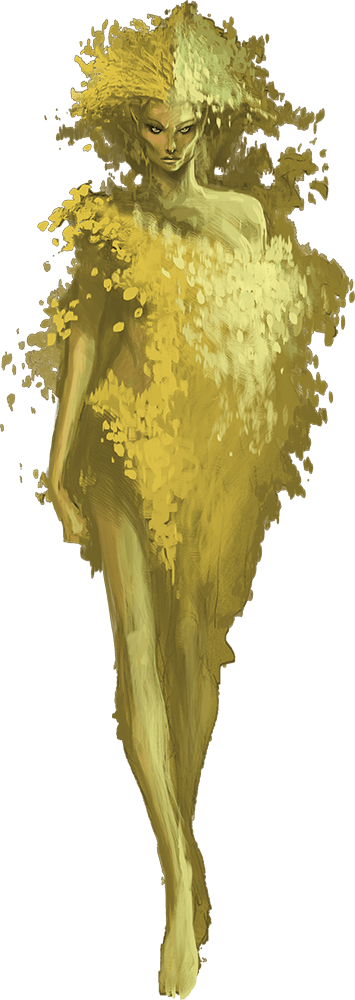

Dryad
Travelers entering a forest might catch a glimpse of a feminine form flitting through the trees. Warm laughter hangs on the air, drawing those who hear it deeper into the emerald shadows.

Treebound. Powerful fey will sometimes bind lesser fey spirits to trees, transforming them into dryads. This is sometimes done as a punishment when the fey spirit falls in love with a mortal and that love is forbidden.
A dryad can emerge from the tree and travel the lands around it, but the tree remains her home and roots her to the world. As long as the tree remains healthy and unharmed, the dryad stays forever youthful and alluring. If the tree is harmed, she suffers. If the tree is ever destroyed, the dryad descends into madness.
Reclusive Fey. Dryads act as guardians of their woodland demesnes. Shy and reclusive, they watch interlopers from the trees. A dryad struck by the beauty of a stranger might investigate more closely, perhaps even try to lure the individual away to be charmed.
Dryads work with other sylvan creatures to defend their forests. Unicorns, treants, and satyrs live alongside them, in addition to druids that share the dryads' devotion to the woods they call home.
Woodland Magic. Dryads can speak with plants and animals. They can teleport from one tree to another, luring interlopers away from their groves. If pressed, a dryad can beguile humanoids with her enchantments, turning enemies into friends. They also know a handful of useful spells.
Environment
(FIXME)
Token

Dryad
Medium fey, neutral
- Armor Class 11 (16 with barkskin)
- Hit Points 22 (5d8)
- Speed 30 ft.
STR DEX CON INT WIS CHA 10 (+0) 12 (+1) 11 (+0) 14 (+2) 15 (+2) 18 (+4)
- Proficiency Bonus +2
- Saving Throws
- Damage Vulnerabilities
- Damage Resistances
- Damage Immunities
- Condition Immunities
- Skills Perception +4,Stealth +5
- Senses darkvision 60 ft.,passive Perception 14
- Languages Elvish,Sylvan
- Challenge 1
Innate Spellcasting. The dryad's innate spellcasting ability is Charisma (spell save DC 14). The dryad can innately cast the following spells, requiring no material components:
At will: druidcraft
3/day each: entangle, goodberry
1/day each: barkskin, pass without trace, shillelagh
Magic Resistance. The dryad has advantage on saving throws against spells and other magical effects.
Speak with Beasts and Plants. The dryad can communicate with beasts and plants as if they shared a language.
Tree Stride. Once on her turn, the dryad can use 10 feet of her movement to step magically into one living tree within her reach and emerge from a second living tree within 60 feet of the first tree, appearing in an unoccupied space within 5 feet of the second tree. Both trees must be Large or bigger.
Actions
Club. Melee Weapon Attack: +2 to hit (+6 to hit with shillelagh), reach 5 ft., one target. Hit: 2 (1d4) bludgeoning damage, or 8 (1d8 + 4) bludgeoning damage with shillelagh.
Fey Charm. The dryad targets one humanoid or beast that she can see within 30 feet of her. If the target can see the dryad, it must succeed on a DC 14 Wisdom saving throw or be magically charmed. The charmed creature regards the dryad as a trusted friend to be heeded and protected. Although the target isn't under the dryad's control, it takes the dryad's requests or actions in the most favorable way it can.
Each time the dryad or her allies do anything harmful to the target, it can repeat the saving throw, ending the effect on itself on a success. Otherwise, the effect lasts 24 hours or until the dryad dies, is on a different plane of existence from the target, or ends the effect as a bonus action. If a target's saving throw is successful, the target is immune to the dryad's Fey Charm for the next 24 hours.
The dryad can have no more than one humanoid and up to three beasts charmed at a time.